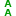

文字工具
快捷键：T 或者 F8
文字工具( )专门用来处理文字，在工具选项中可以调整诸如文字颜色及字体、字号、字距等参数；除了文字工具的工具选项以外，还有一个专门的文字菜单也专门用于文字处理。
{kind=link}
Inkscape中的文字是可以转成路径的。文字转成路径后，就失去了所有与排版相关的所有属性，比如字体、字号、行距等等，全都失效。转成路径的文字和圆形、矩形、星形等没有区别，我们只能按路径的方式对其进行修改，比如调整节点，具体操作可以参考 节点工具 和 钢笔工具。
因为文字转成路径以后不再具有字体属性，所以建议完成的inkscape文件中文字都转成路径，这样就不用担心其它电脑上字体不全的问题；同时，最好在自己的电脑上保留一份文字未转路径的备份，以备再修改需要。
或者，对于文字转成路径的inkscape文件，可以在文件中同时保存一个不显示的文字图层，专门用来存储转路径前的文字。这样可以方便自己后续再编辑此文件。
这一节我们主要针对文字转成路径 之前 进行说明；或者说，我们主要对文字的排版进行说明。
提示
驿窗注： Inkscape中输入文字时，可以有两种形态，一种是常规文本，另一种是流文本。二者的说明请参考下面 操作方法 中的描述。
操作方法
(第一种方法所创建的文字称为常规文本；常规文会一直保持在同一行中，不会自动换行；如果想换行，需要手动输入Enter键)
第二种方法：切换到文字工具( )，在画布上画一个矩形框，矩形内会显示一个输入提示符(这个矩形框称为文本框)，然后用键盘输入文字。
(第二种方法所创建的文字称为流文本；流文本会在文本框内自动换行，以确保文字内容始终在框内，不会超出框外)
如果流文本的文本框变成红色，表示文字内容超出了文本框的容纳上限，需要调大文本框的尺寸，或者调小字号，否则无法显示全部文字内容。
用文字工具点击流文本，会显示其文本框，且文本框的右下角会显示一个小菱形，鼠标点击并拖动这个小菱形可以调整文本框的尺寸。
(用文字工具点击常规文本，不会显示文本框，因为常规文本没有文本框)
用文字工具点击任何文字，文字对象第一行的左侧都会显示一个小方块。这个小方块是用来显示基线位置的，不能进行操作。(转成路径后，小方块消失)
对于已经存在的文字对象，用鼠标点击文字中相应的位置，会在点击位置显示输入提示符，您可以继续输入更多文字，也可以删除已有文字。
输入特殊字符：inkscape可以直接输入Unicode字符，方法如下：(不区分大小写)
进入Unicode模式：按Ctrl+U；此时窗口下方的提示栏会显示： Unicode字符(回车结束)
输入16进制Unicode值+空格；例如，输入5174空格，再输入65FA空格，再按回车；(兴旺)
(输入过程中请注意查看窗口下方的提示栏，会显示Unicode值对应的字符)
(空格的含义是上屏，与输入法类似；连续输入多个特殊字符时，每个完整的Unicode值后面都应该有一个空格，否则无法完成输入)
(按回车键或Esc键会退出Unicode模式；想继续输入，需要重新进入Unicode模式)
(汉字对应Unicode值来自这里：https://www.unicode.org/charts/PDF/U4E00.pdf)
(易经阴阳图对应Unicode值来自这里：https://www.unicode.org/charts/PDF/U2600.pdf)
(麻将八万对应Unicode值来自这里：https://www.unicode.org/charts/PDF/U1F000.pdf)
(可能无法使用数字小键盘输入)
(操作系统中必须已经安装相应的字体，否则可能无法正常显示)
(支持Unicode字符的字体：https://www.unicode.org/resources/fonts.html)
(全部Unicode：https://www.unicode.org/charts/)
{kind=link}
{kind=link}
工具选项
工具选项提供的功能类同于排版功能：
( 字体 )：这里可以对选中的文字设置字体，默认是sans-serif。
( Normal )：字体属性，例如粗体、斜体等。用文字工具选中部分文字后，Ctrl+B可以切换粗体，Ctrl+I可以切换斜体。
( 30 )：字号调整，单位是pt。
( pt )：字号的单位。
(  )：行距调整；根据基线来衡量，默认值为1.25，默认单位为lines(行)。
( lines )：行距的单位。
(
 )：上标。
)：上标。(
 )：下标。
)：下标。(
 )：单词间距调整。英文单词是由空格来区分，所以，此选项会调整空格的大小。
)：单词间距调整。英文单词是由空格来区分，所以，此选项会调整空格的大小。( )：字距调整：单行文字的左右位置微调。可以调整一行全部文字，也可以调整行中单个或多个选中的文字，或者调整鼠标指针右侧的全部文字。只针对常规文本，流文本无效。(Alt+方向键)(Shift+Alt+方向键)
( )：字距调整：单行文字的上下位置微调。可以调整一行全部文字，也可以调整行中单个或多个选中的文字，或者调整鼠标指针右侧的全部文字。只针对常规文本，流文本无效。(Alt+方向键)(Shift+Alt+方向键)
( )：字距调整：旋转角度。这里是字符各自旋转，非整体旋转。可以调整多行全部文字，也可以调整单个或多个选中的文字，或者调整鼠标指针右侧的单个文字；只针对常规文本，流文本无效。(Alt+[)(Alt+])(Ctrl+[)(Ctrl+])
(
 )：横排与竖排切换。可以从左到右竖排，也可以从右到左竖排。
)：横排与竖排切换。可以从左到右竖排，也可以从右到左竖排。(
 )：此选项可以切换书写方向，主要针对从右向左横向书写的语言，比如阿拉伯语，简体中文基本上用不到。
)：此选项可以切换书写方向，主要针对从右向左横向书写的语言，比如阿拉伯语，简体中文基本上用不到。提示
驿窗注： 字距恢复到默认值对于工具选项中的12、13、14这三个字距调整选项，随时可以点击菜单 文字→移除手工字距调整 来恢复到默认值。
操作之前要先用文字工具选中目标文字；如果是整体恢复，可以使用选择工具(
 )选择文字整体，然后执行菜单命令。
)选择文字整体，然后执行菜单命令。
{kind=link}
{kind=link}
{kind=link}
{kind=link}
{kind=link}
{kind=link}
{kind=link}
颜色、沿路径排列、填充形状
文字颜色可以像其它对象一样，设置填充颜色和描边颜色，包括使用渐变和图案等：
文字颜色
另外，请参考以下内容：
文字沿路径排列文字填充形状